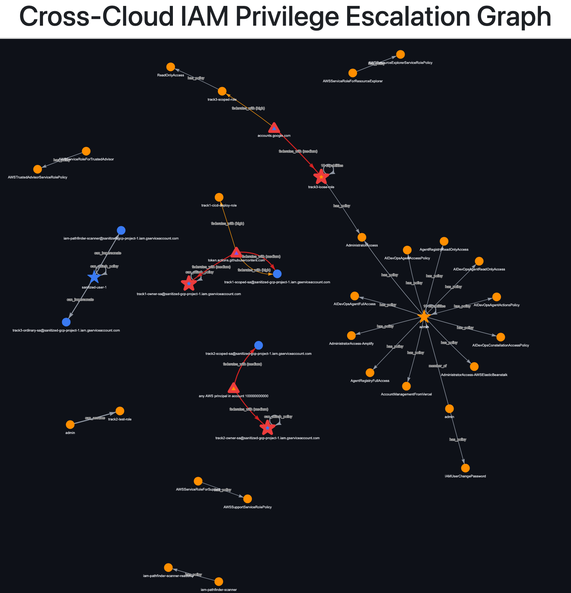
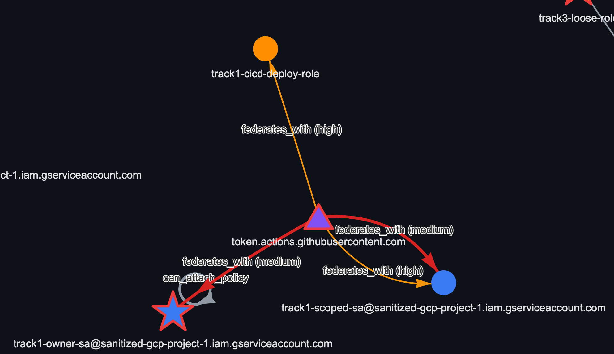
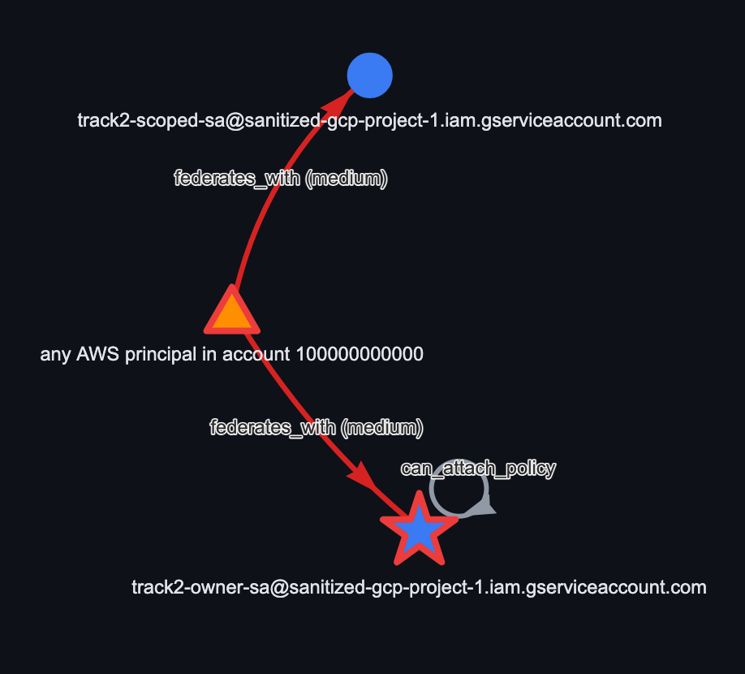
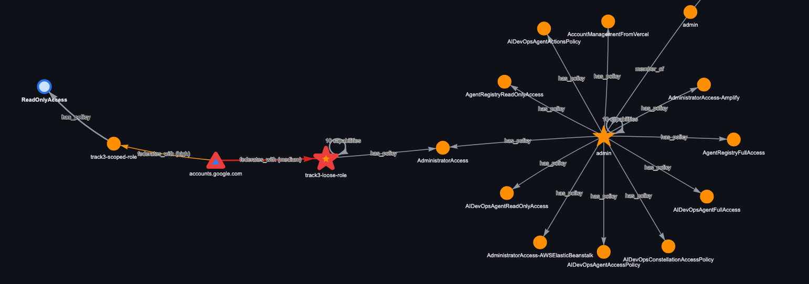

Cross-cloud IAM privilege escalation pathfinder
A tool that maps IAM identities across AWS and GCP into one graph and finds privilege escalation paths that cross the boundary between them — specifically the ones a single-cloud tool can't see, because its graph stops at its own cloud's edge.
Why this, not another clone
The more interesting problem is what happens when the same identity is trusted by more than one cloud. In each scenario I built, the misconfiguration itself lives entirely on one side — a GCP Workload Identity condition that only checks an AWS account, say — and a good single-cloud tool could flag that on its own. What it can't tell you is that the same identity also has a foothold in a different cloud, because its graph never includes a system it doesn't scan. That's the correlation gap: not that the misconfiguration is invisible, but that its true blast radius is. Sola Security's research frames this the same way — multi-cloud identity analysis is a cross-vendor correlation problem, where the relationships that matter span platforms that were never designed to be reasoned about together.
This project is a working answer to that gap: two collectors, each reading only its own cloud's IAM data, feeding a correlation layer that proves — from real API responses, not assumption — when the same identity shows up in both.

The three scenarios
1. A CI/CD identity trusted by both clouds, scoped correctly on one side and not the other
GitHub Actions federates into both AWS and GCP. AWS's trust policy pins the exact repo and branch. GCP's Workload Identity provider only checks the GitHub org. Any repo under that account — not just the intended pipeline — can mint a token that becomes GCP project owner. Validated on real AWS and GCP infrastructure; the detector correctly flags the loose binding and stays silent on the correctly-scoped one.

2. GCP trusting an AWS account directly, no third party involved
A GCP Workload Identity provider trusts an entire AWS account with no role-level restriction. Every IAM identity in that account, not just the one CI role it was set up for, can become a GCP service account owner. Proved live — a real AWS session token was exchanged for a real GCP access token through the loose provider.

3. AWS trusting GCP directly, the mirror direction
Google is one of AWS's built-in identity providers, and the
trust policy here accepted any Google-signed token audienced to
sts.amazonaws.com without checking which specific
GCP identity sent it. An ordinary GCP service account — nothing
privileged about it on the GCP side — becomes AWS
administrator. Also proved live: a real Google identity token,
exchanged for real temporary AWS admin credentials.

Framework mapping and fixes
| # | Scenario | MITRE ATT&CK | NIST SP 800-53 | CIS Controls | Fix |
|---|---|---|---|---|---|
| 1 | CI/CD identity trusted by both clouds | T1550.001, T1199 | AC-3 | 5.4, 6.8 | Check repository + ref, not just repository_owner |
| 2 | GCP trusts an AWS account directly | T1199, T1078.004 | AC-6 | 3.3 | Add a role-scoped attribute_condition, not just the account ID |
| 3 | AWS trusts GCP directly | T1199, T1078.004 | AC-6 | 3.3 | Add accounts.google.com:sub pinned to one GCP service account |